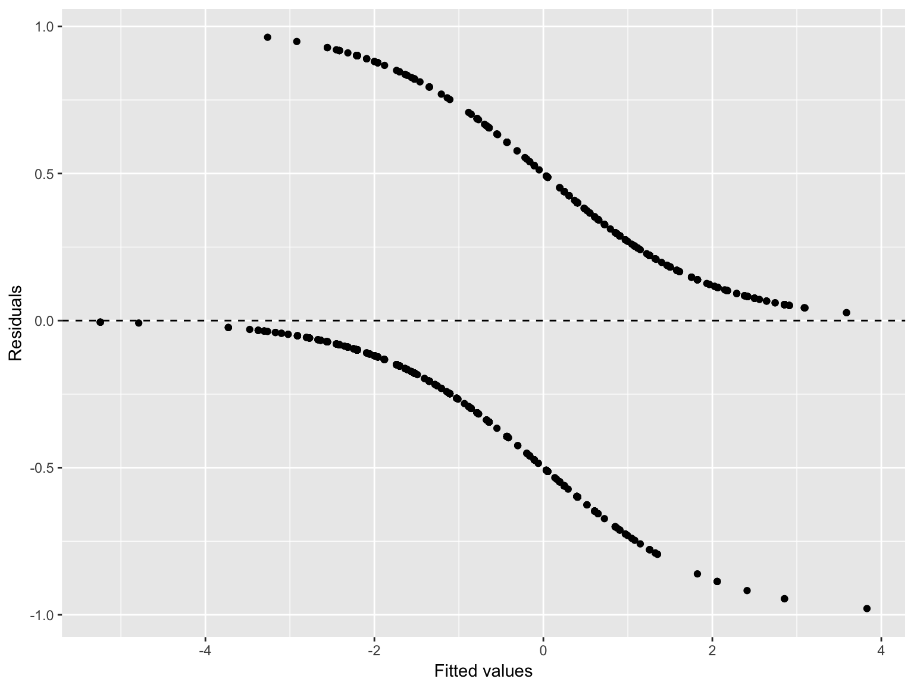

- What made a survivor?
- Can we survive?!
A Study in Disaster
mauveSushi
Introduction
Our Purpose
The Dataset
- from Kaggle
- 1309 rows
- 11 variables
The Data
Variables
Name Type Unit Value/Range has_survived nominal 0 = No, 1 = Yes passenger_class ordinal 1 = 1st, 2 = 2nd, 3 = 3rd gender nominal male, female age numerical year [0,5], [6,18], [19,55], [56 and above], missing number_of_siblings_and_spouses numerical person [0,8] number_of_parents_and_children numerical person [0,6] fare numerical pound [0, 93.5] embarked_from nominal C = Cherbourg, Q = Queenstown, S = Southampton Scatter Plot Matrix
Logistic Regression
Formula
\[ln(\frac{p}{1-p})=\alpha_0+\alpha_1x_1+\alpha_2x_2+\dots +\alpha_nx_n = D\] \[p = \frac{1}{1 + e^{-D}}\]
Graph

R’s Function
glm(formula, family = binomial(link = "logit")), data, ...)Backward Search
The “Best” Model
## ## Call: ## glm(formula = has_survived ~ gender + age + number_of_siblings_and_spouses + ## passenger_class + embarked_from, family = binomial(link = "logit"), ## data = titanic) ## ## Deviance Residuals: ## Min 1Q Median 3Q Max ## -2.7755 -0.6791 -0.4560 0.7074 2.5697 ## ## Coefficients: ## Estimate Std. Error z value Pr(>|z|) ## (Intercept) 4.86097 0.47163 10.307 < 2e-16 *** ## gendermale -2.60736 0.15798 -16.505 < 2e-16 *** ## age[19,55] -2.00712 0.38995 -5.147 2.65e-07 *** ## age[56, above) -3.10763 0.53229 -5.838 5.27e-09 *** ## age[6,18] -1.76429 0.43159 -4.088 4.35e-05 *** ## agemissing -2.21886 0.42028 -5.280 1.30e-07 *** ## number_of_siblings_and_spouses -0.35361 0.09297 -3.803 0.000143 *** ## passenger_classsecond -0.91904 0.21489 -4.277 1.90e-05 *** ## passenger_classthird -1.77251 0.19438 -9.119 < 2e-16 *** ## embarked_fromQ -0.47350 0.30504 -1.552 0.120601 ## embarked_fromS -0.67719 0.18791 -3.604 0.000314 *** ## --- ## Signif. codes: 0 '***' 0.001 '**' 0.01 '*' 0.05 '.' 0.1 ' ' 1 ## ## (Dispersion parameter for binomial family taken to be 1) ## ## Null deviance: 1736.2 on 1305 degrees of freedom ## Residual deviance: 1191.1 on 1295 degrees of freedom ## AIC: 1213.1 ## ## Number of Fisher Scoring iterations: 5The Regression Line
\[\hat{\frac{p}{1-\hat{p}}}= 4.86097 \\ - 2.60736 \times gendermale \\ -2.00712 \times age[19,55] \\ -3.10763 \times age[56, above) \\ -1.76429 \times age[6,18] \\ -2.21886\times agemissing \\ -0.35361 \times number\_of\_siblings\_and\_spouses \\ -0.91904\times passenger\_classsecond \\ -1.77251\times passenger\_classthird \\ -0.47350\times embarked\_fromQ \\ -0.67719\times embarked\_fromS\]
Model Evaluation
The Diagnostics

Hosmer-Lemeshow goodness-of-fit test
- Treating [0,1] as probability range
- Divide into bin(s)
- Conduct goodness-of-fit test on each bin
- The null hypothesis is: “The observed and the expected proportions are the same for each bin”
The Bin(s)
## y0 y1 yhat0 yhat1 ## [0.00525,0.0987] 175 18 178.83444 14.16556 ## (0.0987,0.0995] 164 30 174.70423 19.29577 ## (0.0995,0.154] 92 15 92.46998 14.53002 ## (0.154,0.248] 140 22 129.56752 32.43248 ## (0.248,0.473] 107 55 102.11090 59.88910 ## (0.473,0.613] 84 77 70.41299 90.58701 ## (0.613,0.818] 38 128 44.82434 121.17566 ## (0.818,0.979] 8 153 15.07560 145.92440## ## Hosmer and Lemeshow goodness of fit (GOF) test ## ## data: titanic$has_survived, fitted(m_best_search) ## X-squared = 22.308, df = 6, p-value = 0.001065Feature Selection
Age vs. Gender
Passenger Class vs. Gender
Number of Siblings and Spouses vs. Gender
Embarked From vs. Gender
Passenger Class vs. Embarked From
The Best Models
The “Sexed” Model
## ## Call: ## glm(formula = has_survived ~ gender + number_of_siblings_and_spouses, ## family = binomial(link = "logit"), data = titanic) ## ## Deviance Residuals: ## Min 1Q Median 3Q Max ## -1.6930 -0.6782 -0.6026 0.7383 2.2295 ## ## Coefficients: ## Estimate Std. Error z value Pr(>|z|) ## (Intercept) 1.1606 0.1183 9.812 < 2e-16 *** ## gendermale -2.5131 0.1410 -17.819 < 2e-16 *** ## number_of_siblings_and_spouses -0.2615 0.0739 -3.538 0.000403 *** ## --- ## Signif. codes: 0 '***' 0.001 '**' 0.01 '*' 0.05 '.' 0.1 ' ' 1 ## ## (Dispersion parameter for binomial family taken to be 1) ## ## Null deviance: 1736.2 on 1305 degrees of freedom ## Residual deviance: 1352.3 on 1303 degrees of freedom ## AIC: 1358.3 ## ## Number of Fisher Scoring iterations: 4## ## Hosmer and Lemeshow goodness of fit (GOF) test ## ## data: titanic$has_survived, fitted(m_best_w_gender) ## X-squared = 13.886, df = 6, p-value = 0.03094The “Sexed” Line
\[\hat{\frac{p}{1-\hat{p}}} = 1.1606\\ - 2.5131 \times gendermale\\ -0.2615 \times number\_of\_siblings\_and\_spouses\]
The “Sexless” Model
## ## Call: ## glm(formula = has_survived ~ passenger_class + age + number_of_siblings_and_spouses + ## embarked_from, family = binomial(link = "logit"), data = titanic) ## ## Deviance Residuals: ## Min 1Q Median 3Q Max ## -2.0825 -0.9046 -0.6653 1.0446 2.2504 ## ## Coefficients: ## Estimate Std. Error z value Pr(>|z|) ## (Intercept) 2.86333 0.36802 7.780 7.23e-15 *** ## passenger_classsecond -0.79637 0.18240 -4.366 1.27e-05 *** ## passenger_classthird -1.72612 0.16609 -10.393 < 2e-16 *** ## age[19,55] -1.79335 0.32533 -5.512 3.54e-08 *** ## age[56, above) -2.90927 0.44775 -6.498 8.16e-11 *** ## age[6,18] -1.29812 0.35283 -3.679 0.000234 *** ## agemissing -2.16215 0.35297 -6.126 9.04e-10 *** ## number_of_siblings_and_spouses -0.13932 0.07493 -1.859 0.062987 . ## embarked_fromQ 0.20219 0.25405 0.796 0.426104 ## embarked_fromS -0.67714 0.15988 -4.235 2.28e-05 *** ## --- ## Signif. codes: 0 '***' 0.001 '**' 0.01 '*' 0.05 '.' 0.1 ' ' 1 ## ## (Dispersion parameter for binomial family taken to be 1) ## ## Null deviance: 1736.2 on 1305 degrees of freedom ## Residual deviance: 1529.0 on 1296 degrees of freedom ## AIC: 1549 ## ## Number of Fisher Scoring iterations: 4## ## Hosmer and Lemeshow goodness of fit (GOF) test ## ## data: titanic$has_survived, fitted(m_best_wo_gender) ## X-squared = 5.1275, df = 6, p-value = 0.5276The “Sexless” Line
\[\frac{\hat{p}}{1-\hat{p}} = 2.86333\\ -0.79637 \times passenger\_classsecond\\ -1.72612 \times passenger\_classthird\\ -1.79335 \times age[19,55]\\ -2.90927 \times age[56, above)\\ -1.29812 \times age[6,18]\\ -2.16215 \times agemissing\\ -0.13932\times number\_of\_siblings\_and\_spouses\\ + 0.20219\times embarked\_fromQ \\ -0.67714 \times embarked\_fromS\]